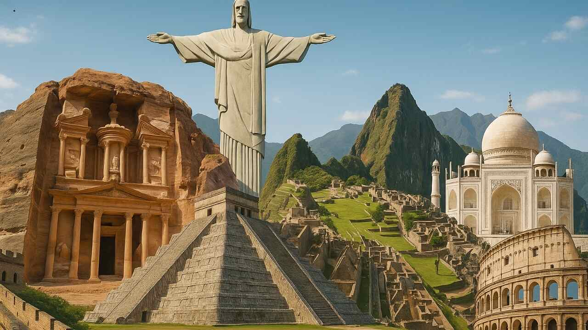
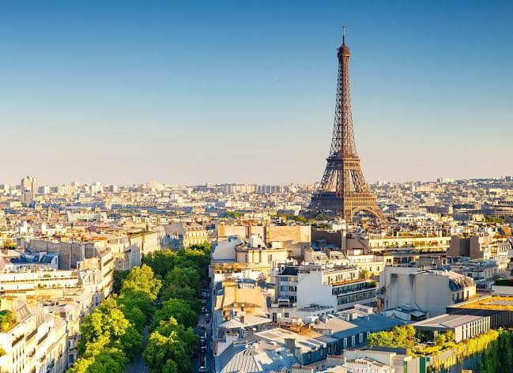
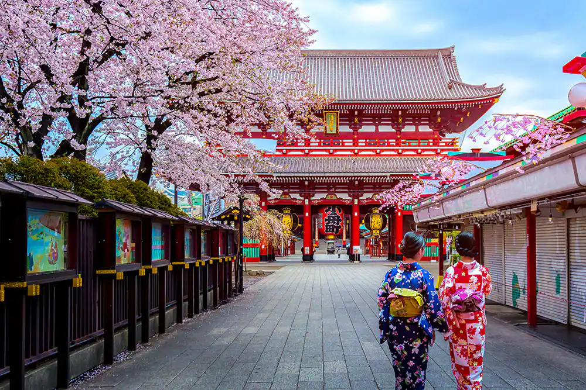

Apresentando
Por: Larissa Kuriu e Geovana Megumi
Objetivo em apresentar dicas, curiosidades e orientações.

Quem somos:
Bem-vindo ao nosso blog de viagens! O nosso propósito é transformar a sua maneira de viajar, mostrando que o mundo é muito maior do que os cartões-postais tradicionais. Queremos ser o seu guia durante sua viagem, aquele amigo que te dá as melhores dicas, ajuda a descobrir culturas locais e te leva a conhecer lugares incríveis pelo mundo. Acreditamos que viajar é colecionar histórias autênticas, e estamos aqui para garantir que a sua próxima aventura seja inesquecível, segura e cheia de descobertas maravilhosas.
Como funcionamos:
Nós funcionamos como seu(a) guia para experiências incríveis. Nossa equipe e nossa comunidade de viajantes procuram destinos de ponta a ponta para trazer guias práticos, roteiros detalhados e indicações valiosas de pontos turísticos imperdíveis — incluindo aqueles locais escondidos e locais não tão óbvios que você não encontra nos guias tradicionais. Além disso, facilitamos a sua vida antes mesmo do embarque: aqui você encontra desde o checklist perfeito, de como organizar a mala da melhor forma até dicas de economia, transporte e sobrevivência em qualquer canto do planeta.
Por que começamos:
Nosso projeto começou porque cansamos de ver as pessoas visitando sempre os mesmos lugares e cometendo os mesmos erros de planejamento por falta de informação. Percebemos que muita gente deixava de viajar, ou viajava estressada, simplesmente por não saber por onde começar a se organizar. Então decidimos criar este blog para descomplicar o turismo e provar que qualquer pessoa pode explorar o mundo com confiança. Queremos despertar a curiosidade em você e mostrar que o planejamento pode ser tão divertido quanto o próprio destino!✨Destinos mais comuns e sem erro:
Paris, França: Conhecida como a Cidade Luz, Paris encanta visitantes com seus monumentos históricos, museus famosos e gastronomia sofisticada.
Tóquio, Japão: Uma mistura fascinante entre tradição e tecnologia, oferecendo templos antigos, bairros modernos e uma cultura única.

Rio de Janeiro, Brasil: Famoso por suas praias, paisagens naturais e pelo Cristo Redentor, um dos pontos turísticos mais conhecidos do mundo.

Roma, Itália: Uma cidade repleta de história, com atrações como o Coliseu e a Fontana di Trevi.

🔍Curiosidades pelo mundo:
- O Canadá possui mais lagos do que todos os outros países do mundo juntos.
- Na Austrália existem mais cangurus do que habitantes em algumas regiões.
- No Japão, muitos trens costumam ter atrasos de apenas alguns segundos por ano.
- O Brasil abriga a maior floresta tropical do planeta: a Amazônia.
- A Torre Eiffel pode ficar alguns centímetros mais alta durante o verão devido à expansão do metal causada pelo calor.
- Em Roma, há tantas construções históricas que novas obras frequentemente encontram ruínas antigas durante escavações.
📍Destaques da semana: Fora do radar (BR):
Paraty Mirim & Saco do Mamanguá (Rio de Janeiro)Ilha do Mel: Praia de Encantadas & Farol das Conchas (Paraná)
São Luiz do Paraitinga (São Paulo)
🗺️ Roteiros prontos da semana:
3 dias em Buenos Aires
Conheça os melhores bairros, cafés históricos e os bastidores da capital argentina em um roteiro de 3 dias no ritmo certo.
Ver Roteiro Completo →Ouro Preto & Mariana
História, arquitetura colonial e a incrível experiência de descer em uma mina de ouro real em apenas um dia.
Ver Roteiro Completo →📩 Não perca nenhuma dica!
Junte-se à nossa comunidade de viajantes e receba novos roteiros, alertas de viagens e guias práticos direto no seu e-mail.